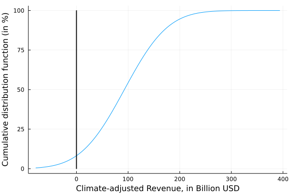
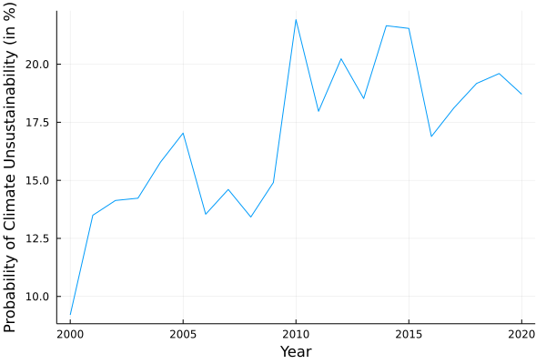

Probability of Climate Unsustainability
Taking into account Climate Uncertainty
As for probability of default, uncertainties in the measure of unsustainability.
Probabiltiy of unsustainability take into account this uncertainty.
using Mimi
using MimiFUND
using Plots
using Statistics
using Distributions
# get the model
m = MimiFUND.get_model()
update_param!(m, :climatedynamics, :climatesensitivity, 4.5)
discounting = [i for i in 0:0.001:0.03]
results_sc = []
for i in eachindex(discounting)
push!(results_sc, MimiFUND.compute_scc(m, year = 2020, eta = 1., prtp = discounting[i]) * 1.68)
end
results_sc = filter(x -> x >0, results_sc)
## Company Statement
Base.@kwdef mutable struct CompanyResults
revenue::Float64 # Revenue
ghg_emissions::Float64 # GHG emissions in milions tonnes of CO2eq
climate_costs::Union{Nothing,Float64, Vector{Float64}} = nothing # Climate-related damages to society from the company, in Billion USD
end
company_a = CompanyResults(revenue = 164.2, ghg_emissions = 4000)
## GHG emissions valuation
using Plots
function climate_valuation!(data::CompanyResults, scc::Vector{Float64})::CompanyResults
data.climate_costs = data.ghg_emissions .* scc * 10^(-3) # to express in billion USD
return data
end
climate_valuation!(company_a, convert.(Float64,results_sc))
climate_adjusted_revenue = company_a.revenue .- company_a.climate_costs
test = fit(Normal, climate_adjusted_revenue)
cdf.(test, climate_adjusted_revenue)
cum_cdf = cdf.(test, [i for i in minimum(climate_adjusted_revenue)*1.5:1:maximum(climate_adjusted_revenue)*2.5])
p = plot([i for i in minimum(climate_adjusted_revenue)*1.5:1:maximum(climate_adjusted_revenue)*2.5], cum_cdf .* 100, label = nothing, ylabel = "Cumulative distribution function (in %)", xlabel = "Climate-adjusted Revenue, in Billion USD")
plot!(p, [0], [100], seriestype = :bar, label = nothing)
A Meaninful measure of Unsustainability
Can be related to probability of default: measure the probability that the business is unsustainable (doesn't worth it).
## dynamic
growth_rate_revenue = rand(Normal(0, 0.05), 21)
growth_rate_emissions = rand(Normal(0, 0.05), 21)
historical_company_a = []
historical_proba_unsustainability = []
for i in eachindex(growth_rate_revenue)
if i == 1
push!(historical_company_a, CompanyResults(revenue = 160, ghg_emissions = 4000))
else
push!(historical_company_a, CompanyResults(revenue = historical_company_a[i - 1].revenue * (1 + growth_rate_revenue[i]),
ghg_emissions = historical_company_a[i - 1].ghg_emissions * (1 + growth_rate_emissions[i])))
end
climate_valuation!(historical_company_a[i], convert.(Float64,results_sc))
climate_adjusted_revenue = historical_company_a[i].revenue .- historical_company_a[i].climate_costs
proba = fit(Normal, climate_adjusted_revenue)
push!(historical_proba_unsustainability, cdf.(proba, 0.)) # proba that climate adjusted revenue be negative
println(cdf.(proba, 0.))
end
time_x = [i for i in 2000:2020]
plot(time_x, historical_proba_unsustainability .* 100, label = nothing, xlabel = "Year", ylabel = "Probability of Climate Unsustainability (in %)")
